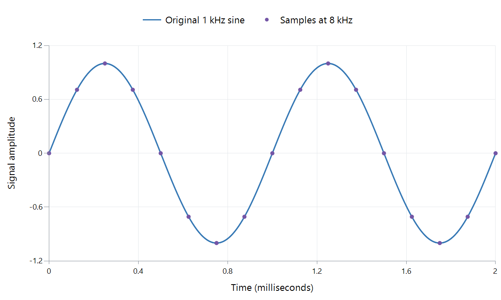

Digital Audio Sampling
The dots in this figure are enough to describe the smooth sine wave because we know what kind of waveform is allowed between them. Sampling becomes easier to understand when that condition is made explicit.

Calculated example: a 1 kHz sine wave sampled at 8 kHz over two milliseconds. The line is the mathematical signal; the dots are its sampled values. This deliberately low rate makes the positions visible.
A microphone first produces a continuously changing electrical signal. Sampling measures its amplitude at regular instants. A digitally generated sound can supply the same sort of sequence directly, without a microphone.
Build one cycle
For the illustrated signal, one cycle takes 1/1,000 second: one millisecond. An 8 kHz sampler measures every 1/8,000 second: 0.125 ms. There are therefore eight sample intervals in a cycle.
| Time | Fraction of a cycle | Sine amplitude |
|---|---|---|
| 0 ms | 0 | 0 |
| 0.125 ms | 1/8 | About +0.707 |
| 0.250 ms | 1/4 | +1 |
| 0.375 ms | 3/8 | About +0.707 |
| 0.500 ms | 1/2 | 0 |
| 0.750 ms | 3/4 | −1 |
| 1.000 ms | 1 | 0; the next cycle begins |
These numbers describe the waveform at particular times. Bit depth determines how accurately each value can be stored; sample rate determines the times. Measuring twice as often and storing each measurement more precisely are independent changes.
Why the spaces between dots are not holes in the sound
Infinitely many arbitrary curves could pass through a set of dots. To reconstruct a particular continuous signal, we limit its frequency content. For ordinary baseband audio, a signal restricted below half the sample rate can, ideally, be reconstructed from the complete sample sequence.
Reconstruction is a filtering operation using the sequence together, not a command to join neighboring dots with straight lines. Each sample contributes to the resulting continuous waveform. In a DAC, practical interpolation and reconstruction filtering perform the corresponding job before the analog signal drives the next stage.
The familiar staircase drawing of a held sample voltage is a useful illustration of one intermediate circuit signal. It is not the intended final sound waveform.
Protect the condition before measuring
If a recording contains frequencies beyond the sampling limit, different signals can produce the same samples. A high-frequency component can then appear as a lower-frequency alias. Once only those ambiguous samples remain, a decoder has no label telling it which of the possible original frequencies was present.
An anti-alias filter therefore attenuates unsuitable frequencies before sampling. Real filters need a transition region, so engineering a usable recording bandwidth involves more than choosing a sample-rate number. The alias demonstration on the sample-rate page shows two different sine waves passing through exactly the same sample positions.
Apply the time grid to several channels
At each stereo time position, a sample frame contains one left value and one right value. A 48 kHz stereo signal has 48,000 sample frames per second: 48,000 values per channel, or 96,000 individual channel values altogether.
A compressed soundtrack in an Emby file need not store those values literally. It stores coded information from which a decoder produces them. The resulting sample timeline is what lets sound duration, channel alignment, and picture synchronization remain well defined.